title: “ME 3300 Experiment-02: Sensor Calibration and Dynamic Measurement of a Pendulum”
Your objectives for this laboratory session are to:
- Become familiar with the WaveForms instrument modules: Supplies, Scope, and Logger
- Build a sensor circuit on a breadboard and verify it with a digital multimeter (DMM)
- Calibrate a sensor: convert an angular potentiometer’s raw voltage output into a physical measurement (angle) by collecting calibration data and fitting a linear calibration equation
- Quantify the quality of your calibration using the norm of residuals, the standard error of fit \(s_{yx}\), the standard error of the slope \(S_{a_1}\), and a 95% confidence interval
- Record a dynamic measurement: the free-swing motion of a pendulum
- Match a simulation of a dynamic model to measured data: simulate a simple pendulum model using
scipy.integrate.solve_ivpand tune its parameters until it approximately reproduces your experiment
Check Your Understanding
By the end of this lab, you should be able to answer all of these questions.
Hardware & WaveForms
- What is a voltage divider, and why does a potentiometer’s output voltage change with shaft angle?
- The ADS analog inputs are differential. What does that mean, and where do the 1+ and 1− wires connect in this lab?
- How do you set the update rate and duration in the WaveForms Logger, and how do you export the recording as a CSV?
- On the Scope, how do you use cursors to measure the period of an oscillating signal?
Programming
- How does a
forloop repeat an operation over a list of values? What doesenumerateadd? - What is an f-string, and how do you insert a variable’s value into a filename or a plot annotation?
- What is the difference between
df.iloc[:, 1]anddf['column_name']? When is.ilocthe safer choice? - When would you reach for
plotlyinstead ofmatplotlib, and how do you read a data point’s index off an interactive plotly figure? - What is
scipy.integrate.solve_ivp, and what inputs does it require? (Hint: it is closely related to MATLAB’sode45.)
Data Analysis
- What is a calibration equation, and why do most sensors need one?
- What do the norm of residuals and the standard error of fit \(s_{yx}\) tell you about the quality of a fit? How are they related?
- Why do we pass
0.975(not0.95) tostats.t.ppf()for a two-sided 95% confidence interval? - How do you determine the damped period \(T_d\) and damped frequency \(\omega_d\) from a measured oscillation?
- Why does the simple pendulum model deviate from measured data even after tuning?
Pre-Lab Setup
You should come to lab having completed all tasks in this section.
Extend Your Folder Structure
Add a Lab_02 folder set to the ME3300 folder you created in Lab 01:
ME3300/
├── Lab_01/
├── Lab_02/
│ ├── Code/
│ │ ├── Lab02_Prelab_Walkthrough.ipynb
│ │ └── FirstName_LastName_Lab02.ipynb
│ ├── Data/
│ └── Figures/Because your .venv environment lives at the top of the ME3300 folder, it already serves every lab subfolder so no new environment setup is needed. This lab uses the packages you installed in Lab 01 (numpy, scipy, matplotlib, pandas, ipykernel) plus two new ones for interactive plotting. Open a terminal in your ME3300 folder and run:
uv add plotly nbformatplotly is the interactive plotting library you will meet in Section 9; nbformat is a small helper plotly needs to display figures inside notebooks.
Read the Background Section
Read the Background section of this manual before lab. It derives the pendulum equation of motion you will simulate in Section 10. We will also discuss this model in class, but arriving with the derivation fresh in your mind will make the simulation step much faster.
Complete the Prelab Walkthrough Notebook
Download Lab02_Prelab_Walkthrough.ipynb from Canvas and save it in ME3300/Lab_02/Code/. Work through it cell by cell before lab. It introduces, with small practice exercises, the new Python skills this lab requires:
forloops andenumeratefor repeating an analysis over many data files- f-strings for building filenames and annotation text from variables
- selecting DataFrame rows and columns by position with
.iloc - exploring a signal with an interactive
plotlyfigure: hover readouts and the range slider - defining your own functions with
def - simulating an ODE with
scipy.integrate.solve_ivp
Skills already covered in Lab 01 (loading CSVs, polyfit/polyval, plot formatting, saving figures) are not retaught, so keep your Lab 01 notebook and the Lab 01 quick-reference tables handy.
The walkthrough contains checkpoint boxes; report the requested values in the Prelab 02 quiz on Canvas (due before your lab session).
Python Quick Reference: New This Lab
| Task | Python command |
|---|---|
| Loop over a list | for angle in angles_deg: |
| Loop with a counter | for i, angle in enumerate(angles_deg): |
| Build a string from variables | f'Ang_{sign}{abs(angle)}Deg.csv' |
| Conditional expression | sign = 'n' if angle < 0 else 'p' |
| Select DataFrame column by position | df.iloc[:, 1] (all rows, second column) |
| DataFrame column → numpy array | df.iloc[:, 1].values |
| Preview first rows of a DataFrame | df.head() |
| Interactive figure | import plotly.graph_objects as go then fig = go.Figure() |
| Add a trace to a plotly figure | fig.add_trace(go.Scatter(x=t, y=v, mode='lines')) |
| Show sample index in the hover box | customdata=list(range(len(t))) + hovertemplate='idx=%{customdata}...' |
| Zoom with a range slider | fig.update_layout(xaxis=dict(rangeslider=dict(visible=True))) |
| Degrees ↔︎ radians | np.radians(deg) / np.degrees(rad) |
| Define a function | def pendulum_ode(t, y): ... return [...] |
| Integrate an ODE | solve_ivp(fun, t_span, y0, t_eval=t_eval) (from scipy.integrate) |
| Save an array to CSV | np.savetxt('file.csv', arr, delimiter=',') |
| Instrument | What you’ll use it for this lab |
|---|---|
| Supplies | Power the potentiometer with the 5 V output |
| Scope | Watch the live sensor voltage; measure oscillation period with cursors |
| Logger | Record voltage vs. time at a set rate and duration; export CSV files |
Laboratory Introduction
In Lab 01 you learned to analyze and present “data” that you collected without any real sensor (just noise from the waveform generator). This lab adds the rest of the measurement chain: a real sensor, a circuit, and a data-acquisition device, followed by a physics-based model of the process you measured. This workflow, build, verify, calibrate, measure, model, is one you will repeat, with different sensors and systems, for the rest of the semester (and career!).
This lab has four major goals:
- Get fluent with the hardware. You will use the WaveForms Supplies, Scope, and Logger instruments with the Analog Discovery Studio (ADS).
- Calibrate a sensor. A potentiometer outputs a voltage, not an angle. You will collect data at known angles, fit a linear calibration equation, and quantify your confidence in it.
- Record a dynamic measurement. You will capture the free-swing motion of a pendulum with your calibrated sensor. This is your first measurement of a system that changes in time, i.e. a dynamic system.
- Match a model to measurements. You will simulate a simple pendulum model in Python and iteratively tune its parameters until the simulation approximates your data. Comparing models to measurements, and understanding why they disagree, is one of the most important skills in experimental engineering.
Note that in this lab you will do no new Python programming until the calibration analysis (Section 8). The first half deliberately uses the WaveForms GUI to power, observe, and record your sensor so that you understand exactly what the instruments do. In later labs, you will begin automating pieces of this workflow from Python, but for now working with the GUI will help us understand the instruments.
Background
The Pendulum Apparatus and the Potentiometer
Your lab pendulum is a rigid arm with a mass at its swinging end, pinned to the shaft of an angular potentiometer (a 10 kΩ rotary potentiometer).
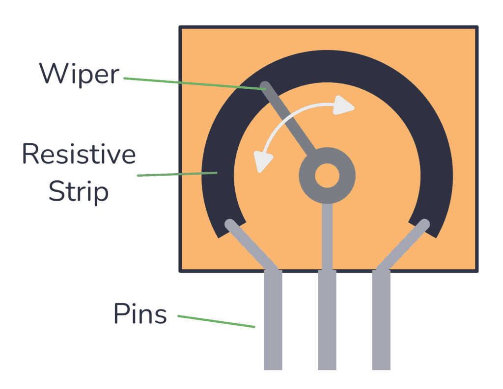
A potentiometer is a resistor with a third, movable contact called the wiper. With the two end terminals connected across a supply voltage, the wiper divides the resistor into two parts, \(R_1\) and \(R_2\), forming a voltage divider (see Figure 6). As the shaft rotates, the wiper slides, \(R_1\) and \(R_2\) change, and the wiper voltage changes in proportion to the shaft angle:
\[V_{out} = \frac{R_2}{R_1+R_2} V_{supply} \approx \frac{\theta}{\theta_{max}} \, V_{supply} \tag{1}\]
In practice the angle–voltage relationship is very nearly linear over the pendulum’s operating range, so a linear calibration equation of the form
\[\theta = a_1 V + a_0 \tag{2}\]
is appropriate. Your aim in Section 8 is to determine coefficients \(a_1\) and \(a_0\) experimentally and to quantify how much you should trust them.
Simple Pendulum Model
An ideal planar pendulum is a body suspended from a light rod of length \(L\), pinned at a frictionless pivot, swinging under gravity. The model becomes the classic “simple pendulum” if we assume:
- The mass \(m\) is concentrated at the swinging end.
- The rod is rigid and massless.
These assumptions limit the model’s accuracy, but by how much? This is what your measurements will reveal.
Referring to the coordinate system in Figure 2, the torque about the pivot P includes gravity acting on the mass and a viscous damping torque \(\tau_f = -b\dot\theta\) from friction at the pivot. Summing torques gives:
\[\left( \tau_P \right)_z = -mgL\sin\theta - b\dot{\theta} \tag{3}\]
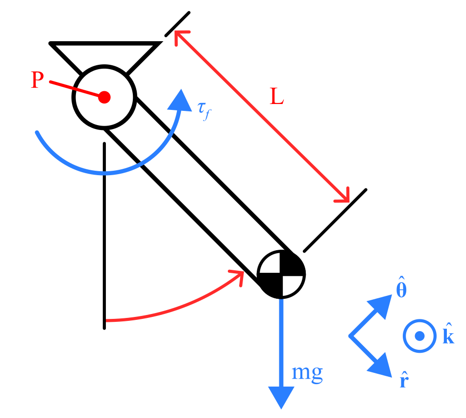
The moment of inertia of a point mass about the pivot is \(I_P = mL^2\), so Newton’s second law for rotation, \(\left(\tau_P\right)_z = I_P \ddot{\theta}\), gives
\[-mgL\sin\theta - b\dot{\theta} = mL^2 \ddot{\theta}. \tag{4}\]
We can rearrange this into standard form yielding a second-order nonlinear ODE:
\[\ddot{\theta} + 2\zeta\omega_n \dot{\theta} + \omega_n^2 \sin(\theta) = 0, \qquad \zeta = \frac{b}{2mL^2\omega_n}, \qquad \omega_n = \sqrt{\frac{g}{L}} \tag{5}\]
where \(\omega_n\) is the natural frequency and \(\zeta\) is the damping ratio. You can measure \(L\) directly with a ruler, but \(\zeta\) depends on \(m\) and \(b\), which you will not measure today. Instead, you will tune \(\zeta\) until the simulation matches your data.
From Model to Simulation
Numerical ODE solvers (MATLAB’s ode45 and Python’s solve_ivp) integrate systems of first-order equations. To simulate Equation 5, we rewrite the single second-order equation as two first-order equations by introducing the angular velocity \(\omega = \dot\theta\) as a second state variable:
\[\frac{d\theta}{dt} = \omega, \qquad \frac{d\omega}{dt} = -2\zeta\omega_n\omega - \omega_n^2\sin(\theta) \tag{6}\]
The solver marches these equations forward in time from an initial condition \(\left[\theta(0),\, \omega(0)\right]\) — for your experiment, the release angle and zero velocity. You will implement this in Section 10.
Part-1: Set Up the ADS and WaveForms
Connect the ADS
- Ensure the Analog Discovery Studio is plugged into a wall outlet, powered on, and connected to your computer via USB.
- Open the WaveForms application. In the Device Manager, select Analog Discovery Studio and click Select (the same steps as Lab 01).
- The WaveForms Welcome screen lists all available instruments; see Figure 3. Identify the three you will use today:
- Supplies — controls the ADS power outputs
- Scope (oscilloscope) — displays analog voltage vs. time, live
- Logger — records voltage over time and exports it to file
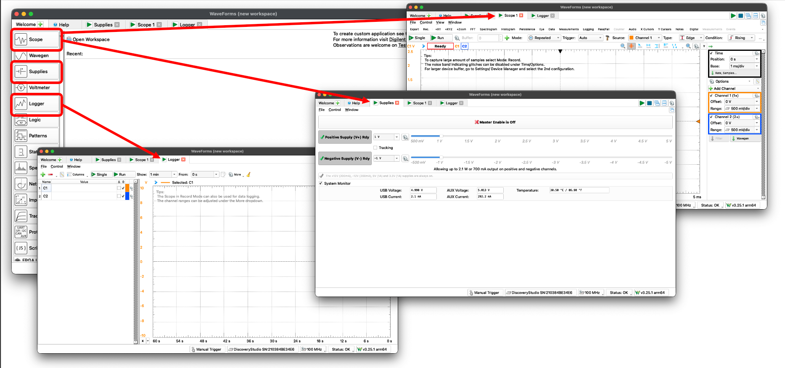
Q1. In your logbook, match each WaveForms instrument you’ll use today (Supplies, Scope, Logger) to a piece of traditional benchtop lab equipment it replaces.
Enable the Power Supply
The ADS provides several ways to supply power. The potentiometer needs a stable reference voltage, so for this lab you will use the programmable supply set to 5 V.
- Open Supplies in WaveForms.
- Enable the 5 V supply and click Master Enable; see Figure 4. Leave the ±12 V supplies off.
- Verify the output with your handheld DMM: measure between the V+ pin and a GND pin on the ADS breadboard.
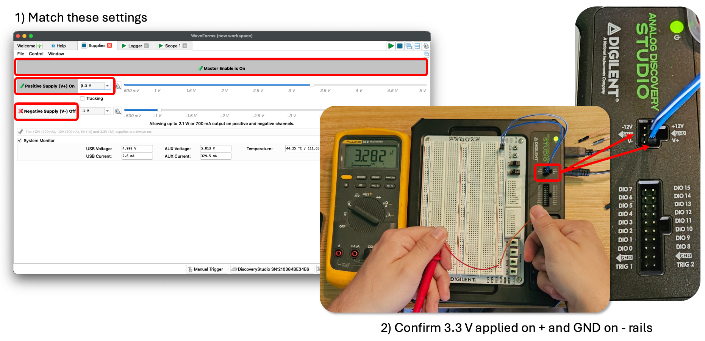
Q2. What voltage does your DMM read? Is it exactly 5 V? Record the value. Why would it matter for your calibration if this supply drifts during the lab?
Part-2: Build the Potentiometer Circuit
Your main guide for this part is the annotated photo and circuit diagram in Figure 5 and Figure 6. Study these figures first; the text and table below explain how to build your circuit and what each connection does.
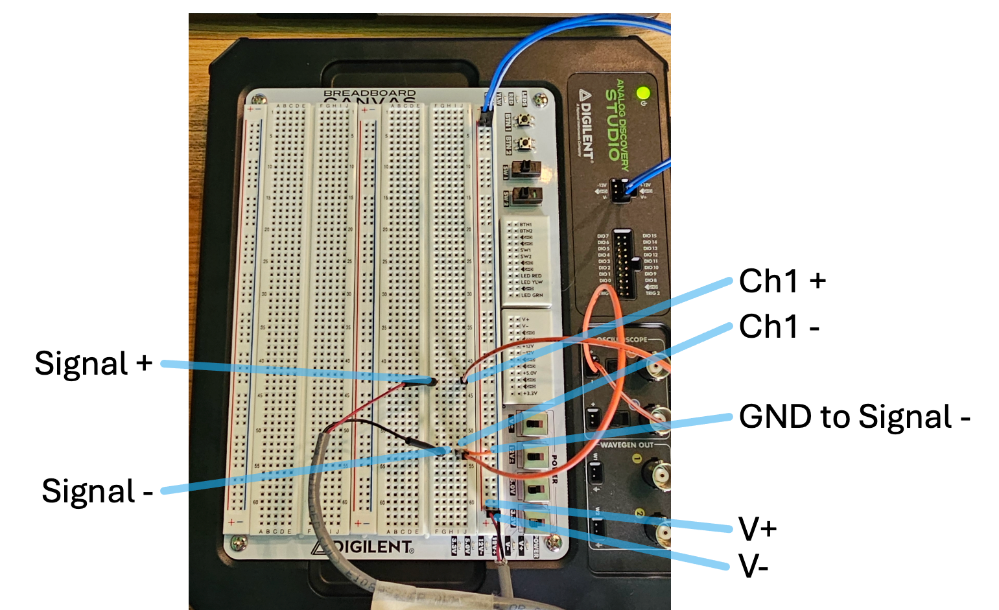
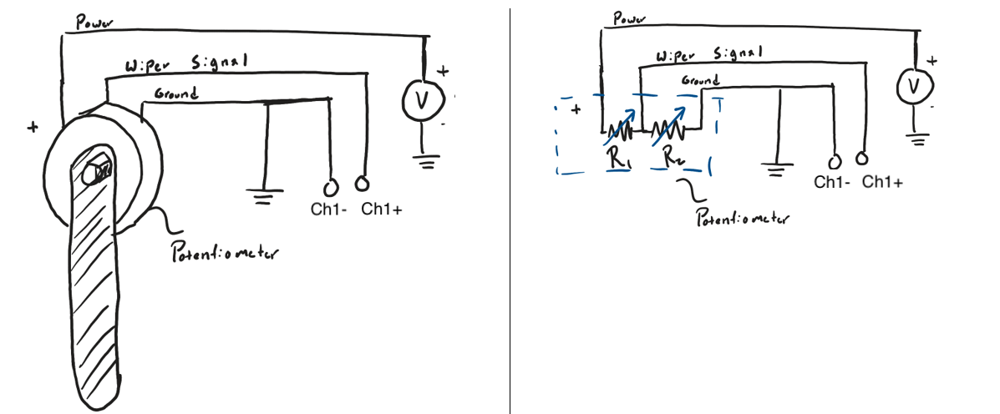
The potentiometer has three critical leads (most in the lab actually have four with an extra GND pin), and the ADS analog inputs are differential. Channel 1 measures the voltage difference between its 1+ and 1− pins. That gives four connections in total:
| Potentiometer lead | Connects to | Purpose |
|---|---|---|
| End terminal (V+) | 5 V (V+) on ADS | Supplies the top of the divider |
| End terminal (V-) & Signal – | GND on ADS | Grounds the bottom of the divider |
| Signal + (Wiper center) | 1+ (Scope Ch. 1 positive) | The signal: divider output voltage |
| — (jumper) | GND rail → 1− (Ch. 1 negative) | Gives the differential input its reference |
- Match your wiring to Figure 5, routing each connection through the breadboard rails as shown.
- Before applying power, gently confirm each jumper is seated, and check with your DMM (continuity mode) that V+ and GND are not shorted together.
- Enable the supply, then slowly rotate the pendulum by hand while measuring the wiper voltage with your DMM (you can use spare jumpers to access this signal). The voltage should vary smoothly across the swing range.
The potentiometer body may be misaligned so that its dead zone (the small angle where the wiper leaves the resistive track) falls inside the swing range. Ask your TA for help. They will loosen the grub screw, rotate the potentiometer body until the jump occurs far outside the operating range (near ±180°), and re-tighten it. Then re-test.
Q3. Sketch the schematic of your circuit in your logbook. Label the supply, ground, wiper signal, and the ADS input pins.
Q4. Record the wiper voltages at the two extremes of the pendulum’s travel (about −90° and +90°). Roughly what fraction of the 0–5 V range does your sensor use?
Part-3: Observe the Signal with the Scope
Before recording data, get to know your signal. It is good practice to always look at a live signal before trusting a logged file; it’s the fastest way to catch a loose wire, a misaligned sensor, or a bad setting. We will use the WaveForms Scope (a built-in digital oscilloscope) for this purpose.
Configure the Scope
- Open Scope in WaveForms.
- Ensure Channel 1 is enabled.
- Match the settings in Figure 7:
- Range: 500 mV/div (This controls y axis scaling)
- Offset: −1.65 V (this centers the mid-travel voltage on screen)
- Time base: 100 ms/div (This controls x axis scaling)
- Mode: Shift (This makes the window slide as new data is collected resulting in a smooth history of the signal)
- Press Run. You should see the live voltage trace.
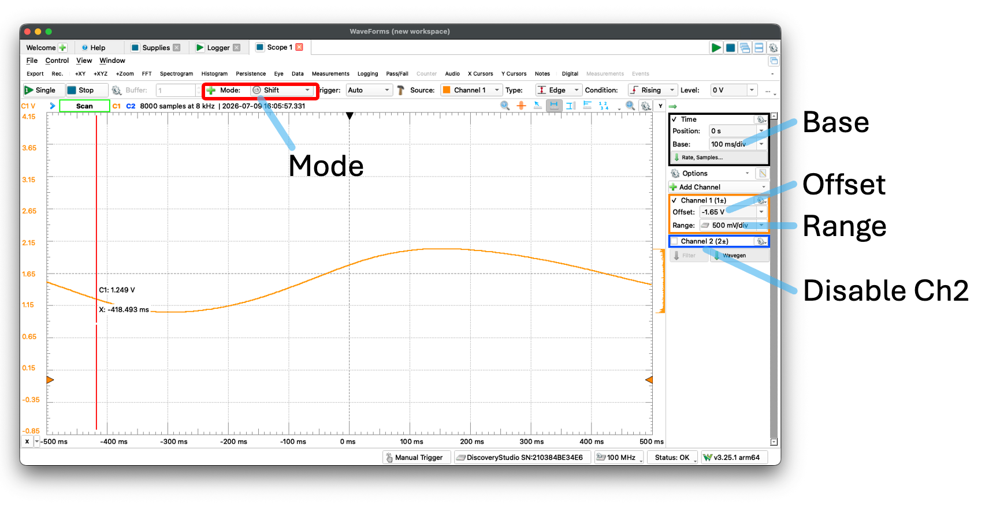
Explore the Signal
- Slowly rotate the pendulum through its full range (about −90° to +90°) and watch the trace respond.
- Lift the pendulum, release it, and let it swing freely. Watch the oscillation. Press Stop to freeze the display.
- With the display frozen, open the Cursors panel and place two X (time) cursors one full oscillation apart; see Figure 8. The readout shows the time difference you can use as a first estimate of the oscillation period. (Note: you may need to adjust your time base to properly see a complete oscillation.)
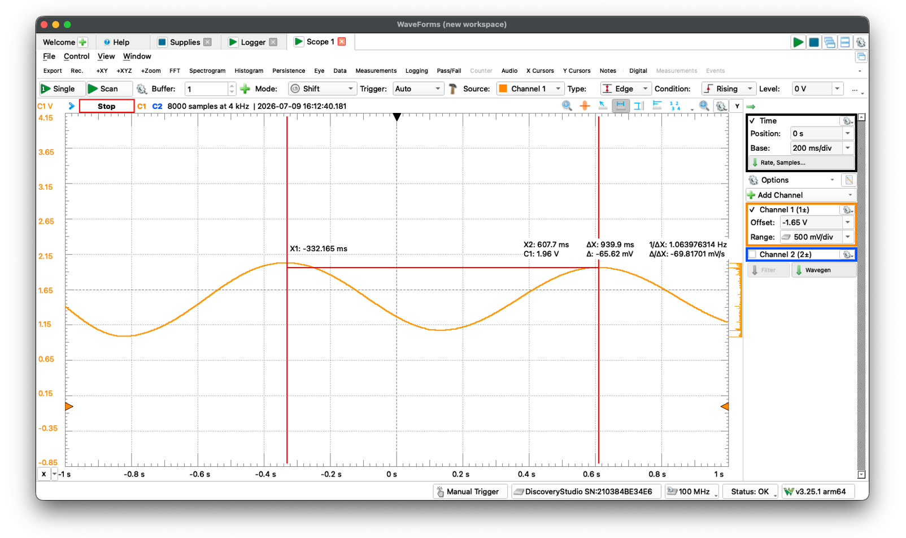
Q5. Sketch the frozen waveform in your logbook. Is it a sine wave? Is the amplitude constant, or does it decay? Label your sketch with the approximate period from the cursors.
Q6. Hold the pendulum still at 0° (straight down) and read the mean voltage (Scope Measurements panel, see Figure 9, or just the trace level). How does it compare to what the voltage divider predicts for mid-travel?
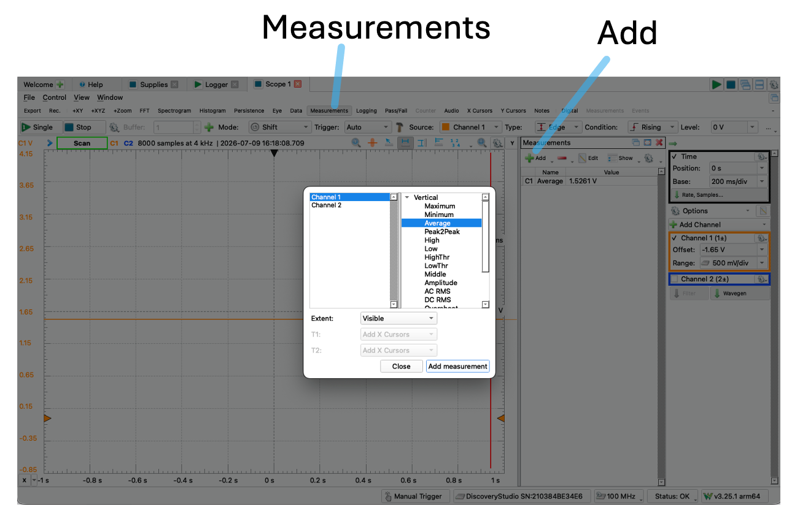
Part-4: Calibrate the Sensor
Now it’s time to build a calibration for your sensor. A calibration converts sensor output (volts) into the physical quantity you actually want (degrees). You will hold the pendulum at a series of known angles, record a short voltage dataset at each one, then fit Equation 2 to the results in Python.
Set Up the Logger
- Open Logger in WaveForms.
- Configure Channel 1 to record the Scope Channel 1 voltage, and match the settings in Figure 10:
- Update: 50 ms (i.e., 20 samples per second)
- Duration: 10 seconds
- You will export each recording as a CSV via File → Export, using the same export settings as Lab 01.
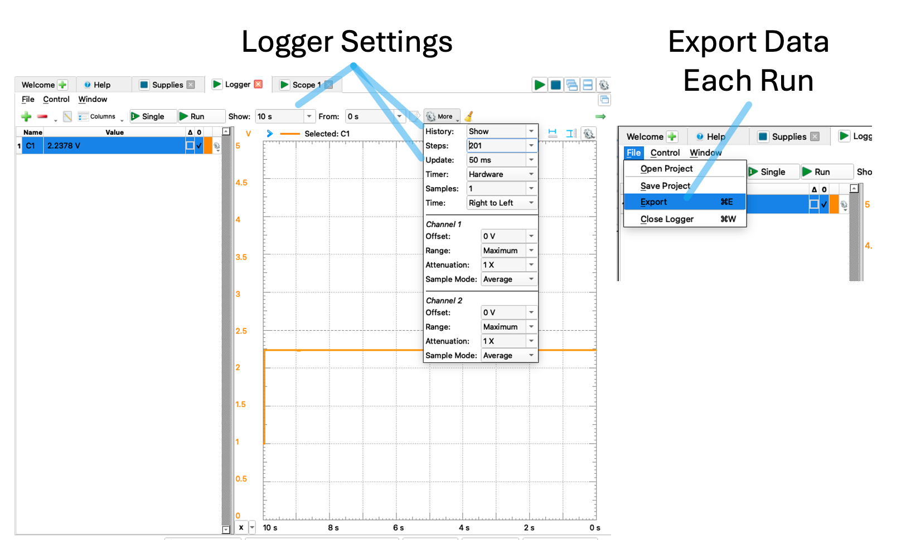
Collect Calibration Data
Choose a reliable way to set the pendulum angle: the supplied protractor, or a smartphone level app (e.g., Bubble Level). Angles follow the right-hand rule about the potentiometer shaft, with 0° defined as the pendulum hanging straight down; see Figure 11.
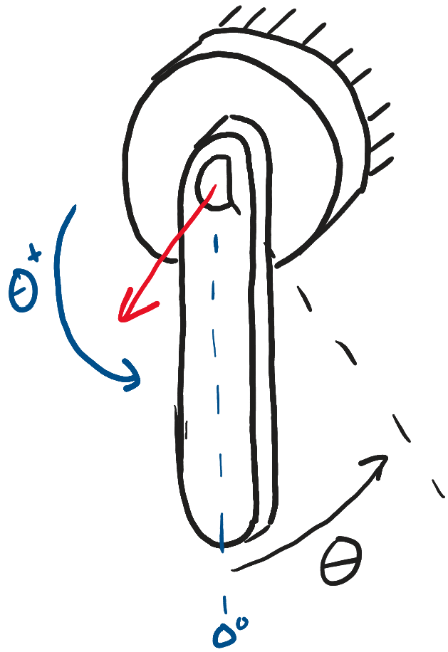
Record data at the following 11 angles spanning the full range:
−90°, −70°, −50°, −30°, −10°, 0°, 10°, 30°, 50°, 70°, 90°
For each angle:
- Hold the pendulum steady at the target angle (one partner holds, one runs the computer).
- Run the Logger for the 10-second duration, then export the CSV to
ME3300/Lab_02/Data/using the naming conventionAng_p45Deg.csv(positive angles) orAng_n45Deg.csv(negative) — replace 45 with the actual angle, and always update the name before exporting so you don’t overwrite a previous run. - Log the angle in a table in your logbook like Table 1. You will fill the voltage column from Python in the next step.
| Pendulum Angle (Degrees) | Average Output Voltage (V) |
|---|---|
| −90° | 0.67 |
| −70° | 0.88 |
| −50° | |
| −30° | |
| −10° | |
| 0° | |
| 10° | |
| 30° | |
| 50° | |
| 70° | |
| 90° |
Q7. Before fitting: visually scan your table. Does voltage change by roughly the same amount for each 20° step? What does that suggest about the linearity of your sensor?
Analyze the Calibration in Python
Open your notebook FirstName_LastName_Lab02.ipynb in VS Code (kernel: your .venv). As in Lab 01, a well-commented starter notebook is available on Canvas, and the prelab walkthrough covered every new syntax element used below.
Structure your notebook with a markdown heading cell for each part of the lab (## Part 4: Calibration, etc.) and a sentence or two describing what each code cell does and what you observed. Your notebook is a lab record, not just code. Before submitting, always run Restart Kernel and Run All Cells — if it doesn’t run top-to-bottom cleanly, it isn’t done.
Step 1 — Load every calibration file and average it.
In Lab 01 you loaded one CSV. Here you have 11 files that all need the same treatment, which is exactly what a for loop is for:
import numpy as np
import matplotlib.pyplot as plt
import pandas as pd
from scipy import stats
plt.rcParams['font.family'] = 'serif'
plt.rcParams['font.serif'] = ['Times New Roman']
plt.rcParams['font.size'] = 10
# The known angles you calibrated at — edit to match your actual angles
angles_deg = np.array([-90, -70, -50, -30, -10, 0, 10, 30, 50, 70, 90])
data_dir = '../Data/'
mean_voltages = np.zeros(len(angles_deg)) # empty array to fill in the loop
for i, angle in enumerate(angles_deg):
sign = 'n' if angle < 0 else 'p'
filename = f'{data_dir}Ang_{sign}{abs(angle)}Deg.csv'
df = pd.read_csv(filename, skiprows=6) # skip WaveForms metadata lines
mean_voltages[i] = df.iloc[:, 1].mean() # voltage is the 2nd column
print(mean_voltages) # sanity check: should match your logbook tableA reminder of concepts here you practiced in pre-lab:
for i, angle in enumerate(angles_deg):— the loop body runs once per angle.enumeratehands you two things each pass: the counteri(0, 1, 2, …), used to store each result in the right slot ofmean_voltages, and the valueangleitself, used to build the filename.sign = 'n' if angle < 0 else 'p'— a one-line conditional:signbecomes'n'for negative angles and'p'otherwise, matching your file-naming convention.f'{data_dir}Ang_{sign}{abs(angle)}Deg.csv'— an f-string. Anything inside{ }is replaced with the variable’s value, so forangle = -70this produces'../Data/Ang_n70Deg.csv'. F-strings are how you build filenames, labels, and annotations from variables.df.iloc[:, 1]— position-based DataFrame indexing: all rows (:), second column (1— Python counts from 0). We use.ilochere because WaveForms may name columns differently depending on export settings, but the positions (time first, voltage second) are consistent.
skiprows against your actual file!
WaveForms export files begin with several # metadata lines before the column headers and data. Open one of your CSVs in VS Code and count the lines to skip — do not assume the value in the example is right for your export settings. If pd.read_csv gives strange results, this is the first thing to check. A quick df.head() after loading shows you exactly what pandas thinks the first rows are.
Step 2 — Fit the calibration equation and quantify its quality.
You are fitting Equation 2, \(\theta = a_1 V + a_0\), with np.polyfit exactly as in Lab 01 — voltage is the input \(x\), angle is the output \(y\). What’s new is finishing the job: reporting how good the fit is. As in Lab 01, the 95% confidence interval on the fit is
\[\theta_{cl} = \theta_{fit} \pm t_{\nu,95\%} \; s_{yx} \tag{7}\]
where the standard error of fit is computed from the residuals \(r_i = \theta_i - \theta_{c_i}\) (data minus fit):
\[s_{yx} = \sqrt{\frac{\sum_{i=1}^{N} r_i^2}{\nu}} = \frac{\lVert r \rVert}{\sqrt{\nu}}, \qquad \nu = N - 2 \tag{8}\]
Note the second form: the norm of the residuals, \(\lVert r \rVert = \sqrt{\sum r_i^2}\), is just the numerator of \(s_{yx}\) before dividing by the degrees of freedom. It is a single number summarizing the total misfit, and \(s_{yx}\) is that misfit converted to a per-point standard error. The standard error of the slope is
\[S_{a_1} = s_{yx} \sqrt{\frac{1}{\sum_{i=1}^{N}\left(x_i - \bar{x}\right)^2}} \tag{9}\]
where \(x\) here is voltage and \(\bar{x}\) its mean. \(S_{a_1}\) carries the units of the slope (°/V) and tells you the uncertainty of your calibration gain. The code implements these equations term by term:
# --- Fit: angle = a1 * voltage + a0 (Eq. 2) ---
coeffs = np.polyfit(mean_voltages, angles_deg, 1) # [a1, a0]
angles_fit = np.polyval(coeffs, mean_voltages)
# --- Fit quality (Eqs. 7-9) ---
N = len(angles_deg)
nu = N - 2 # dof: 2 fit parameters
resid = angles_deg - angles_fit # residuals r_i
norm_r = np.sqrt(np.sum(resid**2)) # norm of residuals ||r||
s_yx = norm_r / np.sqrt(nu) # standard error of fit
t_val = stats.t.ppf(0.975, df=nu) # two-sided 95% => 0.975!
CI = t_val * s_yx # 95% CI half-width
S_a1 = s_yx / np.sqrt(np.sum((mean_voltages - np.mean(mean_voltages))**2))
print(f"Calibration: theta = {coeffs[0]:.4f} V + {coeffs[1]:.4f}")
print(f"norm = {norm_r:.4f} deg, s_yx = {s_yx:.4f} deg, S_a1 = {S_a1:.4f} deg/V")
# Save the coefficients — you will reuse this calibration in later labs
np.savetxt('../Data/calibration_coeffs.csv', coeffs,
header='a1 (deg/V), a0 (deg)', delimiter=',')Recall from Lab 01: stats.t.ppf() takes a one-tailed cumulative probability, so a two-sided 95% interval requires \(1 - 0.05/2 = 0.975\). Check yourself against your t-table: for \(\nu = 9\), \(t_{9,95\%} = 2.262\).
Step 3 — Make the calibration plot.
Nothing here is new — this is Lab 01 plotting with your new results. Build the figure to match Figure 12, using the format requirements in the Post-Lab section. Annotate it (using ax.text and an f-string) with the calibration equation, the norm of residuals, \(s_{yx}\), and \(S_{a_1}\), each with 4 decimal places and units. Save .pdf and .png copies at 600 DPI to your Figures folder.
Q8. Write your calibration equation in your logbook with units on both coefficients.
Q9. In one or two sentences: what do the norm of residuals and \(s_{yx}\) tell you about the quality of your fit? What would a much larger \(s_{yx}\) mean physically for angle measurements made with this sensor?
Example Result
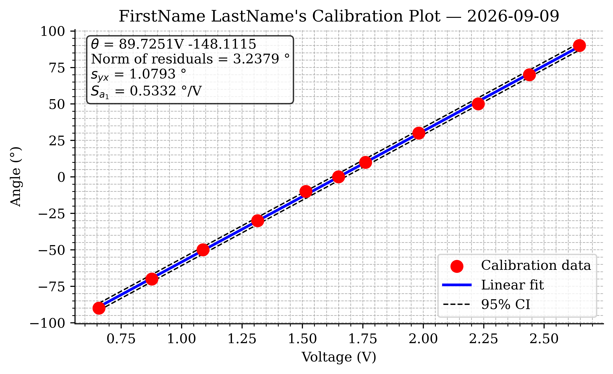
Part-5: Record and Analyze a Free Swing
With a trusted calibration in hand, you can now make a real dynamic measurement.
Record the Swing
- In the Logger, change the settings for a faster, longer recording:
- Update: 10 ms (100 samples per second — fast enough to resolve a ~1 s oscillation smoothly)
- Duration: 20 seconds
- One partner holds the pendulum at approximately +90° (horizontal); the other starts the recording.
- A second or two after the recording starts, release the pendulum smoothly — let go, don’t push.
- Let it swing until the recording ends, then export the CSV as
FirstName_LastName_Lab02_Swing.csvtoME3300/Lab_02/Data/. - Open the file in VS Code and confirm it contains what you expect before moving on.
Load and Calibrate the Data
Back in your python notebook, load the swing recording and convert voltage to angle with your calibration:
# Load swing data (check skiprows against your file, as before)
swing = pd.read_csv('../Data/FirstName_LastName_Lab02_Swing.csv', skiprows=6)
time_raw = swing.iloc[:, 0].values # 1st column: time (s)
volt_raw = swing.iloc[:, 1].values # 2nd column: voltage (V)
# Apply your calibration equation (Eq. 2): volts -> degrees
angle_raw = np.polyval(coeffs, volt_raw)Trim to the Release — Interactively
Your recording starts with several seconds of the pendulum held still — data that tells your reader nothing. To prepare a useful figure, you want \(t = 0\) to be the moment of release, with the held portion trimmed away. A final report figure should show your audience exactly what they need to see and nothing more.
There are lots of ways to find the release. One of our favorites is also the most direct: plot the data and look. For this we introduce a second plotting library, plotly, which excels at exactly this job.
Plotly makes interactive figures: hover the mouse over a trace and a tooltip reports the exact values at that sample; drag the range-slider handles to zoom in on a region. Matplotlib remains the tool for polished static figures — publications, reports, your post-lab submissions. A beauty of Python is that you can use each library where it excels: explore with plotly, publish with matplotlib.
import plotly.graph_objects as go
fig = go.Figure()
fig.add_trace(go.Scatter(
x=time_raw, y=angle_raw,
mode='lines',
name='Calibrated Pot Angle (deg)',
customdata=list(range(len(time_raw))),
hovertemplate='idx=%{customdata}<br>t=%{x:.3f} s<br>angle=%{y:.2f} deg<extra></extra>'
))
fig.update_layout(
title='Interactive Swing Trim Plot',
xaxis_title='Time (s)', yaxis_title='Angle (deg)',
xaxis=dict(rangeslider=dict(visible=True)),
template='plotly_white'
)
fig.show()Two pieces deserve a closer look:
customdata=list(range(len(time_raw)))attaches each sample’s index (0, 1, 2, …) to the trace, andhovertemplateformats the tooltip to display it. Time tells you when the release happened; the index tells you where to slice the array. (The<extra></extra>at the end suppresses a redundant trace-name box.)rangeslideradds a miniature copy of the plot beneath the axes — drag its handles to zoom the main plot into the region around the release.
Now use the figure: zoom in on the release, hover on the last sample before the angle starts to change, and note its index. Then trim with an ordinary slice:
idx0 = 160 # <- YOUR index, read from the plotly figure
time = time_raw[idx0:] - time_raw[idx0] # re-zero the clock at release
angle = angle_raw[idx0:]Hardcoding an index may feel crude next to writing a clever detector — but it is fast, you verified it visually, and the number sits right there in your notebook for anyone to check. For one-off report figures this manual approach is usually the quickest route to a correct plot. When an analysis must process many files, automating the detection becomes worth the effort — you will build exactly such a detector in Lab 03.
This look-first habit is not just for trimming. Whenever numbers downstream look wrong, plot the raw data before you trust any code that processes it. Making quick diagnostic plots is the single most useful debugging habit in experimental work — most “code bugs” in this course are actually data surprises you’d spot instantly on a plot. An interactive plotly figure makes this even faster: the answer to “what is my noise level?” or “when did the event happen?” is one hover away.
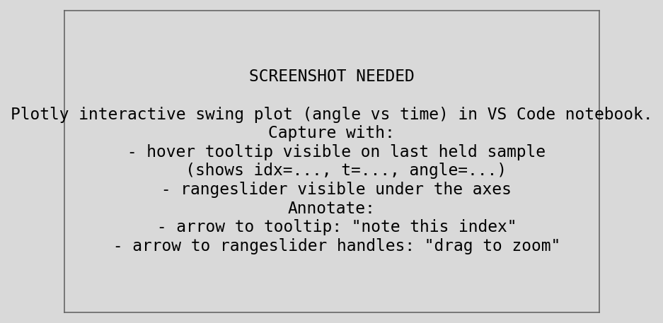
If you have collected this data and confirmed with a TA that it looks correct, this is an acceptable stopping point for your in-lab work. You can complete the rest of this lab later if needed!
Plot the Swing and Measure the Period
Plot angle vs. time as a solid red line (2 pt) with Lab 01 formatting — this figure will become your final swing plot once you overlay the model in Section 10, so build it carefully. From the plot, determine:
- the damped period \(T_d\): the time of one full oscillation. For better accuracy, measure the time across several periods (e.g., 5) and divide.
- the damped frequency \(\omega_d = 2\pi / T_d\) in rad/s.
Q10. Record \(T_d\) and \(\omega_d\) in your logbook. How does \(T_d\) compare to the cursor estimate you made on the Scope in Part 3?
Q11. Does the oscillation period visibly change as the amplitude decays? Look closely at early vs. late cycles. (Keep Equation 5 in mind: is this system exactly linear?)
Part-6: Simulate the Model and Match It to Your Data
Now for the payoff: does the simple pendulum model of Section 4.2 actually describe your pendulum? You will simulate Equation 5 with scipy.integrate.solve_ivp (Python’s counterpart to MATLAB’s ode45) and tune the model until it overlays your measurement.
Implement the Simulation
As explained in Section 4.3, the solver needs the second-order model rewritten as the two first-order equations of Equation 6. In code, that pair of equations becomes a small function that the solver calls over and over:
from scipy.integrate import solve_ivp
# --- Model parameters ---
L = 0.30 # pendulum length (m) — MEASURE yours with a ruler
g = 9.81 # gravitational acceleration (m/s^2)
omega_n = np.sqrt(g / L) # natural frequency (rad/s), Eq. 5
zeta = 0.05 # damping ratio — initial guess, you will tune this
# --- Initial conditions ---
theta0 = np.radians(90.0) # release angle (rad) — match your actual release
omega0 = 0.0 # released from rest
def pendulum_ode(t, y):
"""State derivative for the damped simple pendulum (Eq. 6)."""
theta, omega = y # unpack the state vector
dtheta_dt = omega
domega_dt = -2*zeta*omega_n*omega - omega_n**2 * np.sin(theta)
return [dtheta_dt, domega_dt]
# --- Solve over the same time range as the experiment ---
t_eval = np.linspace(time[0], time[-1], 2000)
sol = solve_ivp(pendulum_ode, (time[0], time[-1]), [theta0, omega0],
t_eval=t_eval, max_step=0.005)
theta_model_deg = np.degrees(sol.y[0])Here is a walk through of what each piece does:
def pendulum_ode(t, y):defines your own function — the first time you’ve written one in this course. The solver hands it the current timetand current statey\(= [\theta, \omega]\), and the function mustreturnthe state’s derivatives \([\dot\theta, \dot\omega]\). Compare the twod..._dtlines to Equation 6 — they are a direct transcription.theta, omega = yunpacks the two-element state vector into named variables so the physics reads clearly.solve_ivp(fun, t_span, y0, ...)takes the derivative function, the time interval(start, stop), and the initial state[theta0, omega0], and numerically integrates forward — just likeode45(@fun, tspan, y0)in MATLAB. By default it uses the same Runge–Kutta 4(5) algorithm.t_evaltells the solver where to report the solution (a dense grid gives a smooth plotted curve), andmax_step=0.005caps the internal step size so the solver can’t step over the fast oscillations.- The solution comes back in
sol:sol.tholds the times, andsol.y[0]holds the first state variable (\(\theta\), in radians) — hencenp.degrees(...)for plotting alongside your data.
Overlay and Tune
Add the model to your swing plot as a dashed blue line (2 pt), re-render, and compare. Then iterate — change one parameter at a time and re-run:
- Period wrong? Adjust
L. The model period is set by \(\omega_n = \sqrt{g/L}\), so if the model oscillates too fast, your effective length is longer than you measured (remember: the model wants the distance to the center of mass, not to the tip). - Decay rate wrong? Adjust
zeta. Larger \(\zeta\) makes the model amplitude die out faster. - First swing misaligned? Adjust
theta0— your actual release angle may not have been exactly 90°.
Aim for close agreement over the first several oscillations; do not expect perfection. It is normal — and physically informative — for the model and data to drift apart late in the record.
Q12. Record your final tuned values of L, zeta, and theta0. How close is the tuned L to your ruler measurement?
Q13. Even after tuning, where does the model disagree with your data most? List at least two assumptions of the simple pendulum model (see Section 4.2) that could cause these errors.
Example Result
Your finished swing plot should look similar to Figure 14.
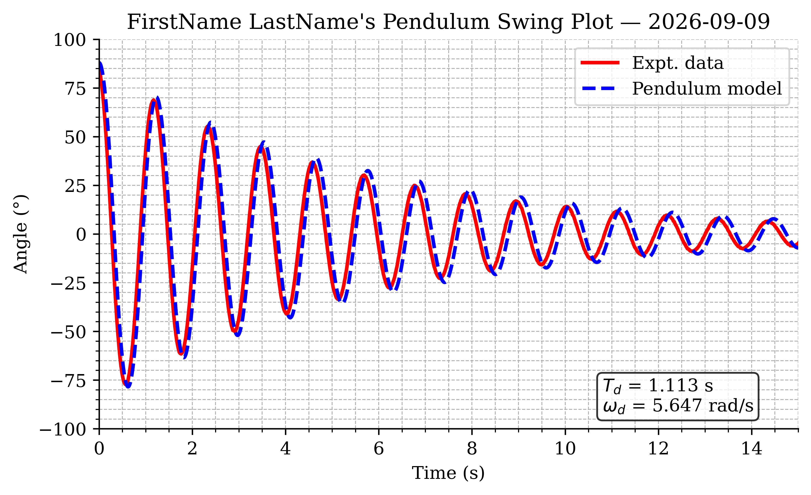
Post-Lab Assignment
Following the lab, upload your submissions to Canvas. Post-labs are due Mondays at 10:00 pm. A full example solution notebook will be posted after all lab sections have met — use it to check your approach, but the work you submit must be your own.
Submission Items
- Your final .ipynb notebook file (
FirstName_LastName_Lab02.ipynb), restarted and run top-to-bottom - Your calibration plot in .pdf format
- Your pendulum swing plot with model overlay in .pdf format
- Answers to the post-lab questions on Canvas
Calibration Plot Requirements
- Figure size: 6.5” wide × 4.0” tall; white background
- All text in Times font; 10–12 pt
- Major and minor grids on; top and right spines removed
- Calibration data: red circle markers, size 75
- Linear fit: solid blue line, 2 pt
- 95% CI lines: dashed black, 1 pt
- Legend placed so it does not cover data
- Axis labels with units; title “FirstName LastName’s Calibration Plot” with the date
- Text annotation (via
ax.text, 4 decimal places, with units): calibration equation, norm of residuals, \(s_{yx}\), and \(S_{a_1}\)
Swing Plot Requirements
- Figure size: 6.5” wide × 4.0” tall; white background
- All text in Times font; 10–12 pt
- Major and minor grids on; top and right spines removed
- Experimental data: solid red line, 2 pt
- Tuned model: dashed blue line, 2 pt
- Time axis starts at the release (\(t = 0\)); set y-limits to about ±100°
- Legend, axis labels with units; title “FirstName LastName’s Pendulum Swing Plot” with the date
- Text annotation (via
ax.text): measured \(T_d\) (s) and \(\omega_d\) (rad/s)
Post-Lab Questions
Be prepared to answer the following (make sure you can answer these before leaving lab!):
- Report your calibration equation, with units on both coefficients.
- What are your norm of residuals and \(s_{yx}\)? What do they tell you about your calibration quality?
- What values of
L,zeta, andtheta0gave the best model agreement? How does the tunedLcompare to your measured length? - Give two physical reasons why the simple pendulum model deviates from your measured data.
Before You Leave
- Remove all jumper wires from the breadboard and return them to the wire bin, sorted by color; discard any damaged wires.
- Disconnect the pendulum leads and set the apparatus back at its station.
- Return the DMM, protractor, and tools to their designated locations.
- Confirm your data files have finished syncing to OneDrive — check on your phone or a second device.
- Make sure both partners have access to all data files and the notebook.
- Make sure the station is clean, collect your belongings, and log off the computer.